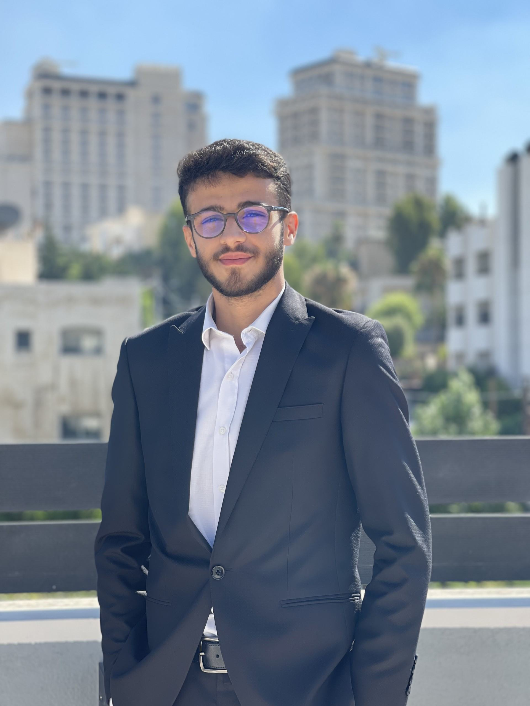

Mohammad Al-Ashqar
Student ID: 22210061
Course: Free Choice Elective 1
Assignment: Portfolio – Freelancing and Digital Business
Instructor: Gida Hamam
Semester: Fall (2025/2026)
Resume: Download Resume
About Me
I am a motivated undergraduate student with a strong interest in computer science, data analytics, artificial intelligence, and automation. My academic background has provided me with solid foundations in programming, algorithms, and problem-solving, along with hands-on experience in research-oriented projects and technical competitions. I am particularly interested in applying data-driven and optimization-based approaches to real-world challenges in intelligent systems. My career objective is to pursue advanced studies and professional roles that allow me to contribute to innovative technological solutions while continuously developing my technical and analytical skills.